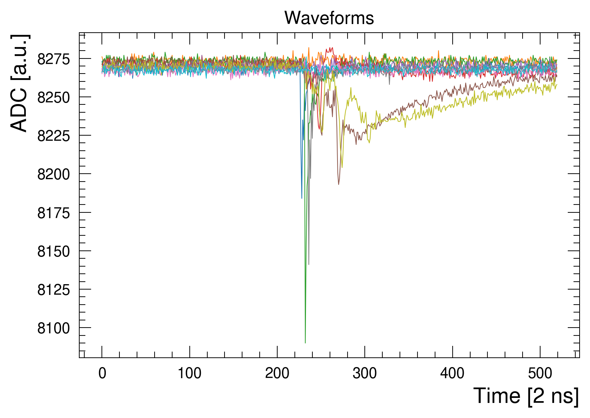
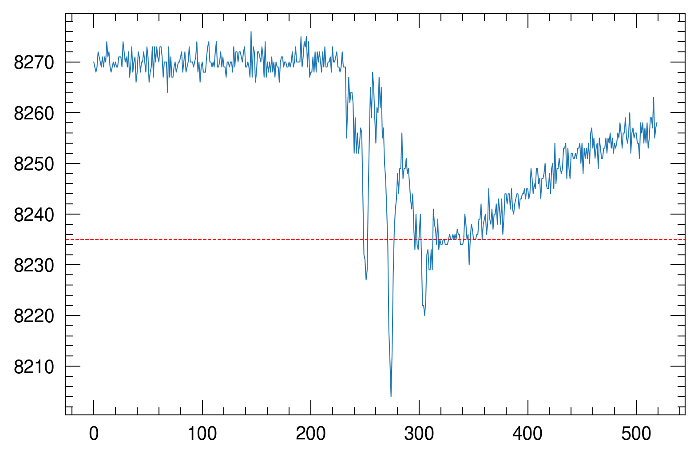
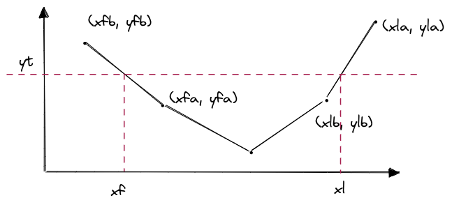
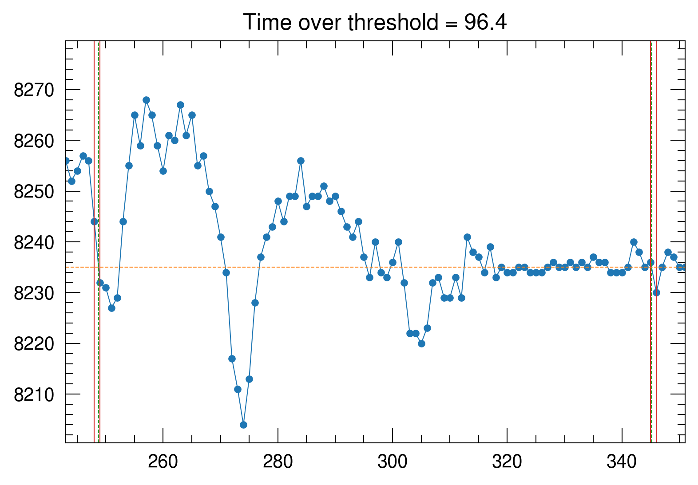
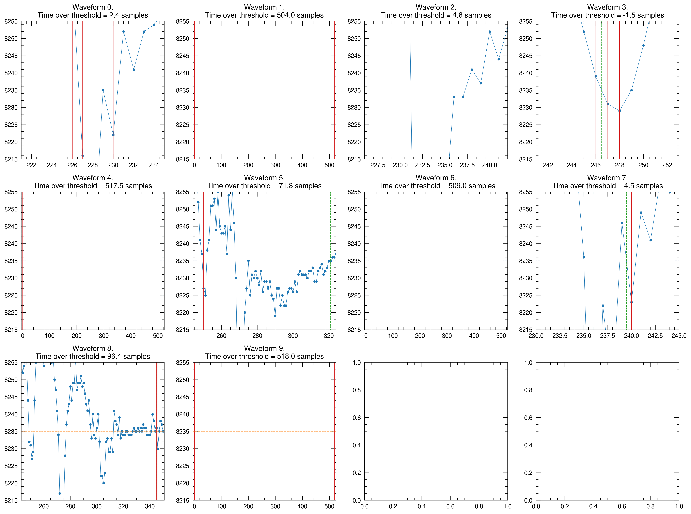
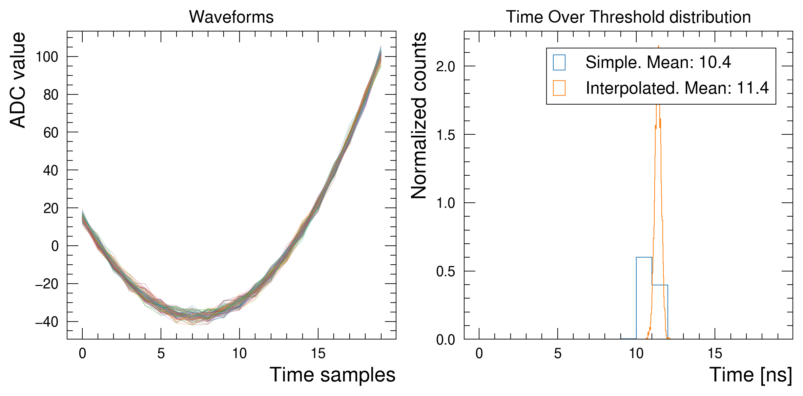

A part of my work consists of acquiring the signal induced on a set of copper strips of a gaseous detectors. The signals dynamics such as the height, shape, duration, typically give useful information about what is going on inside the detector. The signal generated by a gasesous detector depends on several factors: - he geometry, layout and working principle of the detector itself; - the electric field applied in the gas medium that allows for the electron created by an ionizing particle to start an avalanche process and move a sufficiently high number of electrons to be detected by the electronics; - the gas used, which greatly affects the dynamic of the avalanche development
Among all of these parameters, I would like to focus on one: the time over threshold. The time over threshold can be defined in different ways. For simplicity, I will define it as the difference of the time between the signal first and last crosses a fixed treshold.
# The holy trininty of libraries that will be used# throughout the postimport numpy as npimport pandas as pdimport matplotlib.pyplot as plt# Just to set the maximum of items to be printed for an arraynp.set_printoptions(threshold=5)# A better style for plotsplt.style.use('https://gitlab.cern.ch/-/snippets/2223/raw/master/rpcecogas.mplstyle')
Code
window_length =520# This file contains 10 waveforms of 520 samples. Each sample is written on a single linedf = pd.read_csv("https://gist.githubusercontent.com/grigolet/09ffada96abb2acf0fe34070f0e83211/raw/3880aa89e4b113ea2866ec8e3768c03e98f84118/signals.txt", header=None, names=['waveform'])# in the next line I will transform the dataframe into a 2d# numpy array with shape (number of signals, window length).waveforms = df.waveform.values.reshape((-1, window_length))fig, ax = plt.subplots()ax.plot(waveforms.T);ax.set(xlabel='Time [2 ns]', ylabel='ADC [a.u.]', title='Waveforms');

Figure 1: Waveform read-out from a gaseous detector
Image that we would like to compute the duration of all the signals below a threshold that I arbitrarly fix. For example:
Code
# Prepare and read the datawindow_length =520threshold =8235# This file contains 10 waveforms of 520 samples. Each sample is written on a single linedf = pd.read_csv("https://gist.githubusercontent.com/grigolet/09ffada96abb2acf0fe34070f0e83211/raw/3880aa89e4b113ea2866ec8e3768c03e98f84118/signals.txt", header=None, names=['waveform'])# in the next line I will transform the dataframe into a 2d# numpy array with shape (number of signals, window length).waveforms = df.waveform.values.reshape((-1, window_length))fig, ax = plt.subplots()for ix, waveform inenumerate(waveforms): ax.plot(waveform, label=f"Waveform {ix}")ax.axhline(threshold, color='r', linestyle='--')ax.legend(loc='upper left', bbox_to_anchor=(1, 1))ax.set(xlabel='Time [2 ns]', ylabel='ADC [a.u.]', title=f'Waveforms. Threshold at {threshold}');
ToT by taking the closest samples
The 1d case
In this case, the easiest and probably more natual approach to compute the ToT would be to get the first sample below the threshold, the last sample below the threshold and do a difference.
This is fairly straightforward in the case of a single signal and it can be accomplished in few different ways:
Code
# From the previous cell we have waveforms available in a 2d# numpy array of shape (n waveforms, n samples)# I will take waveform 8 just for example purposesthreshold =8235waveform = waveforms[8, :]fig, ax = plt.subplots()ax.plot(waveform)ax.axhline(threshold, color='r', linestyle='--')
<matplotlib.lines.Line2D at 0x7fb662c0cd90>

For the way I defined the time over threshold, I would have to take the first sample before crossing the threshold and the last one before going back
samples_below_threshold = waveform < threshold# Boolean array indicating which sample is below the thresholdsamples_below_threshold
If I imagine the boolean array defined above as an integer array, I could use np.argmax() to find the first item for which the condition is true, i.e. the first item crossing the threshold.
To find instead the last item I could use np.argmax() but applied to the reversed array, taking into account that the resulting index should be then subtracted with the number of samples of the waveform
In a case of a 2d array like waveforms, some numpy gym can be used to perform vectorized operation and avoid using for loops.
A trick I often used to remember on which axis I want to perform an operation on a numpy.ndarray: if the numpy array has a shape (x_dim, y_dim, z_dim, …) then the operation I perform the aggregation on is making that axis collapse.
So in the present case, if I have an (n_waveforms, n_samples) array, then I would expect to have the argmax() of each waveform, so an array with a shape (n_waveforms). This means that axis=0 should be preversed and axis=1 should collapse, so the np.argmax() operation should have axis=1.
It’s a bit tricky but it’s working fine in my mental model
samples_below_threshold = waveforms < threshold# Now we have a 2d array of waveforms but# an analogue boolean masksamples_below_thresholdfirst_items = np.argmax(samples_below_threshold, axis=1)# Reverse the array over the samples dimensions to get the last # point of threshold crossinglast_items = window_length - np.argmax(samples_below_threshold[:, ::-1], axis=1) -1print(first_items, last_items)# Let's graphically check the resultsfig, ax = plt.subplots()for ix, waveform inenumerate(waveforms): ax.plot(waveform, label=f"Waveform {ix}") ax.plot(first_items[ix], threshold, f'C{ix}.') ax.plot(last_items[ix], threshold, f'C{ix}.')ax.legend(loc='upper left', bbox_to_anchor=(1, 1))ax.set(xlabel='Time [2 ns]', ylabel='ADC [a.u.]', title=f'Waveforms. Threshold at {threshold}');
In the example above I marked the points at which the threshold is crossed. However, in the case of a waveform not crossing the threshold, the np.argmax() function would return 0, so first_item would be equal to 0 and last_item would be equal to window_length - 1, as it is for the 9th waveform:
A more accurate time over threshold by linear interpolation
The definition of time over threshold in the cases defined above is working well when the average value of this parameter is significantly sufficienclty high. This would mean that the sampling frequency (or the digitizer resolution) are good enough for this timing measurements.
Some other times, the sampling frequency is not so high and the signals are quite fasts, meaning that their time over threshold is getting smaller and smaller. An idea to improve the time resolution could be to precisely compute the intersection between the threshold viewed as an horizontal line and the segment formed by the sample before and after crossing the threshold.
I will label the coordinates of the points for which the threshold is first crossed with and f for first and the lasts with an l for last. The coordinates that are found before the threshold is passed are labelled with b for before and the ones found just after meeting the threshold are labeled with an a for after. The points we are interested in are the x intersection of the first intersection, that I will call \(x_f\) and the one of the last that will be called \(x_l\). The time over threshold would be defined by the difference \(x_l - x_f\). I will call the threshold \(y_t\).
The labeling might be a bit confusing but I will leave here an image to make things clearer:

Nomenclature used hereafter.
The 1d case
In this case I could set up the code in this way:
Find the coordinates before meeting the thresholds, i.e. \((x_{fb}, y_{fb})\) and \((x_{lb}, y_{lb})\)
Find the coordinates after meeting the thresholds, i.e. \((x_{fa}, y_{fa})\) and \((x_{la}, y_{la})\)
Find \(x_f\) using some simple line equation: \[
\frac{x_f- x_{fb}}{y_t - y_{fb}} = \frac{x_{fa} - x_{fb}}{y_{fa} - y_{fb}}
\]\[
x_f = x_{fb} + (x_{fa} - x_{fb}) \left(\frac{y_t - y_{fb}}{y_{fa} - y_{fb}}\right)
\] In a similar way, for \(x_l\): \[
x_l = x_{lb} + (x_{la} - x_{lb}) \left(\frac{y_t - y_{fb}}{y_{la} - y_{lb}}\right)
\]
Calculate the time over threshold as \(x_l - x_f\)
# I'm taking the threshold as before as an examplewaveform = waveforms[8, :]samples_below_threshold = waveform < threshold# Find the indices xfb and xlbxfb = np.argmax(samples_below_threshold) -1xlb = window_length - np.argmax(samples_below_threshold[::-1]) -2# The corresponding yfb and ylb are easy to get:yfb, ylb = waveform[xfb], waveform[xlb]# Now we can also find the coordinates of the samples# after meeting the thresholdxfa, yfa = xfb +1, waveform[xfb +1]xla, yla = xlb +1, waveform[xlb +1]# Find xf and xlxf = xfb + (xfa - xfb) * ((threshold - yfb) / (yfa - yfb))xl = xlb + (xla - xlb) * ((threshold - ylb) / (yla - ylb))time_over_threshold = xl - xf# Let's visualize everythingfig, ax = plt.subplots()ax.plot(waveform, '.-')ax.axvline(xfb, color='C3')ax.axvline(xf, color='C2', linestyle='--')ax.axvline(xfa, color='C3')ax.axvline(xlb, color='C3')ax.axvline(xl, color='C2', linestyle='--')ax.axvline(xla, color='C3')ax.axhline(threshold, color='C1', linestyle='--')# zoom in in the region of interestax.set(xlim=(xfb -5, xla +5), title=f'Time over threshold = {time_over_threshold:.1f}')
[(243.0, 351.0), Text(0.5, 1.0, 'Time over threshold = 96.4')]

As expected, the time over threshold is now computed as the intersection between the horizontal lines and the segments first and last crossing the threshold. The code above is failing in case the threshold is not crossing any segment:
# Waveform 9 is not crossing the thresholdwaveform = waveforms[9, :]samples_below_threshold = waveform < threshold# np.argmax returns 0 if nothing is foundxfb = np.argmax(samples_below_threshold) -1# This would generated some issues because it's 520 - 0 = 520 xlb = window_length - np.argmax(samples_below_threshold[::-1]) # This part will throw an error because waveform has only# 520 samples and waveform[520] is outside rangeyfb, ylb = waveform[xfb], waveform[xlb]# ...
IndexError: index 520 is out of bounds for axis 0 with size 520
The code is failing because it’s not possible to find the x coordinates for the segment last crossing the threshold. This results in a value of \(x_{lb}\) of 520 that is outside the range of the array (which starts from 0 to 519). A possible solution could be to set the values of \(x_{lb}\) to be 0 or np.nan in case they are found to be 520. This would result in a time over threshold of 0. This is the cleaniest solution I could find:
waveform = waveforms[9, :]samples_below_threshold = waveform < thresholdxfb = np.argmax(samples_below_threshold) -1# Set xfb to be nan in case no threshold crossing# is found. The same for xlbxfb = np.where(xfb !=-1, xfb, 0)xlb = window_length - np.argmax(samples_below_threshold[::-1]) xlb = np.where(xlb != window_length, xlb, 0)# The corresponding yfb and ylb are easy to get:yfb, ylb = waveform[xfb], waveform[xlb]# ... time over threshold will result in a 0 value
The 2d case
The 2d case is a bit more complicated as it involves the usual numpy model to solve this problem in an efficient way. Nevertheless, the steps to approach the problem are the same so the code looks like the following:
samples_below_threshold = waveforms < threshold# Find the indices xfb and xlbxfb = np.argmax(samples_below_threshold, axis=1) -1# Add np.where condition to handle signal without threshold crossingxfb = np.where(xfb !=-1, xfb, 0)xlb = window_length - np.argmax(samples_below_threshold[:, ::-1], axis=1) -2xlb = np.where(xlb != window_length, xlb, 0)# Taking indices along a 2d array is a bit# more complicated. There are few different# ways to do ityfb = np.take_along_axis(waveforms, xfb[:, None], axis=1).flatten()ylb = np.take_along_axis(waveforms, xlb[:, None], axis=1).flatten()xfa = xfb +1yfa = np.take_along_axis(waveforms, xfb[:, None] +1, axis=1).flatten()xla = xlb +1yla = np.take_along_axis(waveforms, xlb[:, None] +1, axis=1).flatten()xf = xfb + (xfa - xfb) * ((threshold - yfb) / (yfa - yfb))xl = xlb + (xla - xlb) * ((threshold - ylb) / (yla - ylb))time_over_threshold = xl - xf# Let's visualize everythingfig, axs = plt.subplots(3, 4, figsize=(4*4, 4*3))for ix, waveform inenumerate(waveforms): ax = axs.flat[ix] ax.plot(waveform, '.-') ax.axvline(xfb[ix], color='C3') ax.axvline(xf[ix], color='C2', linestyle='--') ax.axvline(xfa[ix], color='C3') ax.axvline(xlb[ix], color='C3') ax.axvline(xl[ix], color='C2', linestyle='--') ax.axvline(xla[ix], color='C3') ax.axhline(threshold, color='C1', linestyle='--') ax.set(xlim=(xfb[ix] -5, xla[ix] +5), ylim=(threshold -20, threshold +20), title=f'Waveform {ix}.\nTime over threshold = {time_over_threshold[ix]:.1f} samples') fig.tight_layout()
/tmp/ipykernel_389329/2995661854.py:20: RuntimeWarning: divide by zero encountered in true_divide
xl = xlb + (xla - xlb) * ((threshold - ylb) / (yla - ylb))
You may notice that there are few corner cases that may arise. For instance, have a look at waveform 5: the resulting time over threshold is nan. In this case, if the segment defined by \((x_{lb}, y_{lb}), (x_{la}, y_{la})\) and crossing the threshold is parallel to the threshold itself, the values of either \(y_{fa} - y_{fb}\) or \(y_{la} - y_{lb}\) are equal to 0, resulting in an error similar to:
A possible solution to this is to handle the division using np.divide, which allows to use a where option and that allows to avoid to try/catch or use a context manager to handle the error. For more information see this Stack overflow post.
The code above will become the following:
samples_below_threshold = waveforms < threshold# Find the indices xfb and xlbxfb = np.argmax(samples_below_threshold, axis=1) -1# Add np.where condition to handle signal without threshold crossingxfb = np.where(xfb !=-1, xfb, 0)xlb = window_length - np.argmax(samples_below_threshold[:, ::-1], axis=1) -2xlb = np.where(xlb != window_length, xlb, 0)# Taking indices along a 2d array is a bit# more complicated. There are few different# ways to do ityfb = np.take_along_axis(waveforms, xfb[:, None], axis=1).flatten()ylb = np.take_along_axis(waveforms, xlb[:, None], axis=1).flatten()xfa = xfb +1yfa = np.take_along_axis(waveforms, xfb[:, None] +1, axis=1).flatten()xla = xlb +1yla = np.take_along_axis(waveforms, xlb[:, None] +1, axis=1).flatten()# temp_yf and temp_yl are the arrays to use in case the 'where' condition is False. # If the 'where' condition is true, then the np.divide() result is used insteadtemp_yf, temp_yl = np.zeros_like(yfa, dtype='float64'), np.zeros_like(ylb, dtype='float64')xf = xfb + (xfa - xfb) * (np.divide((threshold - yfb) , (yfa - yfb), out=temp_yf, where=(yfa - yfb) !=0))xl = xlb + (xla - xlb) * (np.divide((threshold - ylb) , (yla - ylb), out=temp_yl, where=(yla - ylb) !=0))time_over_threshold = xl - xf# Let's visualize everythingfig, axs = plt.subplots(3, 4, figsize=(4*4, 4*3))for ix, waveform inenumerate(waveforms): ax = axs.flat[ix] ax.plot(waveform, '.-') ax.axvline(xfb[ix], color='C3') ax.axvline(xf[ix], color='C2', linestyle='--') ax.axvline(xfa[ix], color='C3') ax.axvline(xlb[ix], color='C3') ax.axvline(xl[ix], color='C2', linestyle='--') ax.axvline(xla[ix], color='C3') ax.axhline(threshold, color='C1', linestyle='--') ax.set(xlim=(xfb[ix] -5, xla[ix] +5), ylim=(threshold -20, threshold +20), title=f'Waveform {ix}.\nTime over threshold = {time_over_threshold[ix]:.1f} samples') fig.tight_layout()

Handling corner cases
Unfortunately, the code below does not handle all the cases. Let’s wrap the previous code into a function and prepare some test cases
def compute_time_over_threshold(data: np.ndarray, threshold: float|int| np.ndarray) -> np.ndarray: """Compute the time over threshold for a 1d or 2d array given a fixed threshold. The time over threshold is defined as the difference between the intersection of the threshold with the segments of the samples: the last - the first segments crossing this threshold define the tot. In case no samples cross the tot, the resulting value is 0.as_integer_ratio Parameters ---------- data: ndarray 1d or 2d array of shape (n_waveforms, n_samples) threshold: float or int or ndarray (n_waveforms) a fixed threshold for all the waveforms or a set of threshold for each waveform Returns ------- out: ndarray a 1d array of the time over thresholds of shape (n_waveforms) """# In case of a 1d array of shape (n_samples), convert it to a 2d# array of shape (1, n_samples), so that the code can be used for# both 1d and 2d arrayif data.ndim ==1: waveforms = data[None, :]else: waveforms = data# The same operation for threshold:ifnotisinstance(threshold, np.ndarray): threshold = np.array([threshold]) window_length = waveforms.shape[1] samples_below_threshold = waveforms < threshold[:, None]# Find the indices xfb and xlb xfb = np.argmax(samples_below_threshold, axis=1) -1# Add np.where condition to handle signal without threshold crossing xfb = np.where(xfb !=-1, xfb, 0) xlb = window_length - np.argmax(samples_below_threshold[:, ::-1], axis=1) -1 xlb = np.where(xlb != window_length -1, xlb, 0)# Taking indices along a 2d array is a bit# more complicated. There are few different# ways to do it yfb = np.take_along_axis(waveforms, xfb[:, None], axis=1).flatten() ylb = np.take_along_axis(waveforms, xlb[:, None], axis=1).flatten() xfa = xfb +1 yfa = np.take_along_axis(waveforms, xfb[:, None] +1, axis=1).flatten() xla = xlb +1 yla = np.take_along_axis(waveforms, xlb[:, None] +1, axis=1).flatten()# temp_yf and temp_yl are the arrays to use in case the 'where' condition is False. # If the 'where' condition is true, then the np.divide() result is used instead temp_yf, temp_yl = np.zeros_like(yfa, dtype='float64'), np.zeros_like(ylb, dtype='float64') xf = xfb + (xfa - xfb) * (np.divide((threshold - yfb) , (yfa - yfb), out=temp_yf, where=(yfa - yfb) !=0)) xl = xlb + (xla - xlb) * (np.divide((threshold - ylb) , (yla - ylb), out=temp_yl, where=(yla - ylb) !=0)) time_over_threshold = xl - xfreturn time_over_thresholdwaveform_test = np.array([-1, -1, -1, -1, -1])threshold_test =-0.5tot = compute_time_over_threshold(waveform_test, threshold_test)expected_tot = np.array([4])tot, expected_tot
(array([0.]), array([4]))
Here I wrapped everything into a function and added few initial lines of codes to transform a 1d array into a 2d array with the first dimension set to 1. This allows me to reuse the same code for the case in which we have a single waveform or multiple ones. The same applies for the threshold: if it is a scalar then it’s converted to a 1d array.
Let’s test the function with a simple case: there are no points going below the threshold:
The time over threshold is working fine in this case. Few other corners cases: all samples are below threshold, so the computed time over threshold should be equal to the window length
In this case the time over threshold is not computed properly. The issue arises due to the way xlb is handled. In particular, in line 40, the part xlb = np.where(xlb != window_length - 1, xlb, 0) is setting the values of xlb to 0 in case xlb == window_length - 1. The problem is that there are two cases in which xlb could be equal to window_length - 1. One case is when the last sample is actually the last crossing the threshold. The second is the one where no samples are crossing the threshold, so np.argmax() returns the first item of the array, which in the reversed case is window_length - 1.
For this reason, it is important to distinguish the two cases and handle them separately. In the case of two conditions xlb == window_length - 1 and np.all(samples_below_threshold == True, axis=1) happening at the same time then all the samples are already below the threshold, thus the time over threshold will be equal to the window_length. Instead, in the case of xlb == window_length - 1 and np.any(samples_below_threshold == True, axis=1) it means there is at least one sample below the threshold so we can calculate the time over threshold as expected. It could be all the samples but in that case we would fall into the previous condition, so it should be already handled.
Additionally, xla should be also modified: if xlb == window_length - 1 then it means the last sample is still below the threshold, so xla can be set to be equal to xlb in order to compute the time over threshold on the last point (which is a segment delimited by \(x_{la}, x_{lb}\), so a segment with length 0). Otherwsise, xlb can be set to xla + 1 as usual.
Below the updated code:
def compute_time_over_threshold(data: np.ndarray, threshold: float|int| np.ndarray) -> np.ndarray: """Compute the time over threshold for a 1d or 2d array given a fixed threshold. The time over threshold is defined as the difference between the intersection of the threshold with the segments of the samples: the last - the first segments crossing this threshold define the tot. In case no samples cross the tot, the resulting value is 0.as_integer_ratio Parameters ---------- data: ndarray 1d or 2d array of shape (n_waveforms, n_samples) threshold: float or int or ndarray (n_waveforms) a fixed threshold for all the waveforms or a set of threshold for each waveform Returns ------- out: ndarray a 1d array of the time over thresholds of shape (n_waveforms) """# In case of a 1d array of shape (n_samples), convert it to a 2d# array of shape (1, n_samples), so that the code can be used for# both 1d and 2d arrayif data.ndim ==1: waveforms = data[None, :]else: waveforms = data# The same operation for threshold:ifnotisinstance(threshold, np.ndarray): threshold = np.array([threshold]) samples_below_threshold = waveforms < threshold[:, None] window_length = waveforms.shape[1] xfb = np.argmax(samples_below_threshold, axis=1) -1 xfb = np.where(xfb !=-1, xfb, 0) xlb = window_length - np.argmax(samples_below_threshold[:, ::-1], axis=1) -1# Notice I removed the np.where() condition on xlb yfb = np.take_along_axis(waveforms, xfb[:, None], axis=1).flatten() ylb = np.take_along_axis(waveforms, xlb[:, None], axis=1).flatten() xfa = xfb +1 yfa = np.take_along_axis(waveforms, xfa[:, None], axis=1).flatten()# Here I put a condition on xla: if xlb is the last item, then xla# should be the same as xlb, so the segment (xlb-xla) is of length 0 xla = np.where(xlb == window_length -1, xlb, xlb +1) yla = np.take_along_axis(waveforms, xla[:, None], axis=1).flatten() xf = xfb + (np.divide((threshold - yfb) , (yfa - yfb), out=np.zeros_like(yfa, dtype='float64'), where=((yfa - yfb) !=0))) xl = xlb + (np.divide((threshold - ylb) , (yla - ylb), out=np.zeros_like(yfa, dtype='float64'), where=((yla - ylb) !=0)))# Use np.select() as a case statement: time_over_threshold = np.select(condlist=[ (xlb != window_length -1) & (np.all(samples_below_threshold ==True, axis=1)), # all points crossing threshold (xlb != window_length -1) & (np.any(samples_below_threshold ==True, axis=1)), # at least one point crossing threshold (xlb == window_length -1) & (np.all(samples_below_threshold ==False, axis=1)), # no real points crossing threshold (xlb == window_length -1) & (np.any(samples_below_threshold ==True, axis=1)), # last point crossing threshold ], choicelist=[ window_length, xl-xf,0, xl-xf ])return time_over_threshold
As you can see I removed the np.where() condition onf xlb and added one on xla. If I didn’t, then when xlb is equal to window_length - 1, xla would be equal to window_length, resulting in an error when trying to access the array since the last item is at window_length - 1.
Also, I added np.select() which I usually think of as a n-dimensional version of a case statement. In case xlb != window_length - 1 there could be either all points crossing the threshold or at least one, so the time over threshold would be either the whole window_length or the computed xl - xf value.
In case xlb == window_length - 1 then there could be either no points at all crossing the threshold (time_over_threshold = 0) or there could be only the lat one crossing it, so the time over threshold would be again computed in the standard way of xl - xf.
Now the case in which the first sample is already below the threshold but not the last is correctly handled:
Here below you can find the final the final code I use for the time over threshold calculation and few test cases:
Code
def compute_time_over_threshold(data: np.ndarray, threshold: float|int| np.ndarray) -> np.ndarray: """Compute the time over threshold for a 1d or 2d array given a fixed threshold. The time over threshold is defined as the difference between the intersection of the threshold with the segments of the samples: the last - the first segments crossing this threshold define the tot. In case no samples cross the tot, the resulting value is 0.as_integer_ratio Parameters ---------- data: ndarray 1d or 2d array of shape (n_waveforms, n_samples) threshold: float or int or ndarray (n_waveforms) a fixed threshold for all the waveforms or a set of threshold for each waveform Returns ------- out: ndarray a 1d array of the time over thresholds of shape (n_waveforms) """# In case of a 1d array of shape (n_samples), convert it to a 2d# array of shape (1, n_samples), so that the code can be used for# both 1d and 2d arrayif data.ndim ==1: waveforms = data[None, :]else: waveforms = data# The same operation for threshold:ifnotisinstance(threshold, np.ndarray): threshold = np.array([threshold]) samples_below_threshold = waveforms < threshold[:, None] window_length = waveforms.shape[1] xfb = np.argmax(samples_below_threshold, axis=1) -1 xfb = np.where(xfb !=-1, xfb, 0) xlb = window_length - np.argmax(samples_below_threshold[:, ::-1], axis=1) -1 yfb = np.take_along_axis(waveforms, xfb[:, None], axis=1).flatten() ylb = np.take_along_axis(waveforms, xlb[:, None], axis=1).flatten() xfa = xfb +1 yfa = np.take_along_axis(waveforms, xfa[:, None], axis=1).flatten() xla = np.where(xlb == window_length -1, xlb, xlb +1) yla = np.take_along_axis(waveforms, xla[:, None], axis=1).flatten() xf = xfb + (np.divide((threshold - yfb) , (yfa - yfb), out=np.zeros_like(yfa, dtype='float64'), where=((yfa - yfb) !=0))) xl = xlb + (np.divide((threshold - ylb) , (yla - ylb), out=np.zeros_like(yfa, dtype='float64'), where=((yla - ylb) !=0))) time_over_threshold = np.select(condlist=[ (xlb != window_length -1) & (np.all(samples_below_threshold ==True, axis=1)), # all points crossing threshold (xlb != window_length -1) & (np.any(samples_below_threshold ==True, axis=1)), # at least one point crossing threshold (xlb == window_length -1) & (np.all(samples_below_threshold ==False, axis=1)), # no real point crossing threshold (xlb == window_length -1) & (np.any(samples_below_threshold ==True, axis=1)), # last point ], choicelist=[ window_length, xl-xf,0, xl-xf ])return time_over_threshold
The readout system I use to sample signal is poorly resoluted compared to the average time over threshold of the signals, so I wanted to have a linear interpolation to allow me to compute proper distributions of the time over threshold. This is possible thanks to the intrinsic time jitter of the digitizer which is of few order of magnitude lower than its sampling frequency.
For example, a digitizer can have a sampling frequency of 500 Ms/s but a time jitter (or time resolution) of 50 ps.
The two plots here below shows the difference between using the simple version of the time over threshold and the implemented one.
n_waveforms, n_samples =10_000, 20threshold =-5# Generated some fake data of 10_000 waveforms of 20 samples each# with values between -10 and 0x = np.tile(np.arange(n_samples), n_waveforms).reshape((n_waveforms, n_samples))noise = np.random.randn(n_waveforms, n_samples) *2waveforms =5.5* (x-10) + (x-10)**2-30+ noise# Simple version of the time over thresholdsamples_below_threshold = waveforms < thresholdfirst_items = np.argmax(samples_below_threshold, axis=1)last_items = waveforms.shape[1] - np.argmax(samples_below_threshold[:, ::-1], axis=1) -1simple_tot = last_items - first_items# Linearly interpolated version of the time over thresholdinterpolated_tot = compute_time_over_threshold(waveforms, threshold)# Plot the two time over threshold distributionsfig, axs = plt.subplots(1, 2, figsize=(8, 4))ax = axs[0]ax.plot(waveforms[:100, :].T, linewidth=0.3, alpha=0.5)ax.set(title='Waveforms', xlabel='Time samples', ylabel='ADC value')ax = axs[1]ax.hist(simple_tot, bins=range(0, 20, 1), histtype='step', label=f'Simple. Mean: {simple_tot.mean():.1f}', density=True)ax.hist(interpolated_tot, bins="auto", histtype='step', label=f'Interpolated. Mean: {interpolated_tot.mean():.1f}', density=True)ax.set(title='Time Over Threshold distribution', xlabel='Time [ns]', ylabel='Normalized counts')ax.legend()fig.tight_layout();

It is easily visible that with a set of synthetic signals the time resolution computed with the simple sampling is different from the one computed with a linear interpolation.
Conclusions
In this post I have tried to calculate the time over threshold in the “classical” way, but also by linearly interpolating the threshold with the points of the sampled signal to achieve a better resolution. The 1-dimensional case is fairly straight forward, but the 2-dimensional case had me think a bit about the best way to implement the solution.
Perhaps there are better or easier ways to do this but I couldn’t find anything on the internet so I had to figure it out by myself. If anyone comes up with a cleaner or better solution I will update this poit.